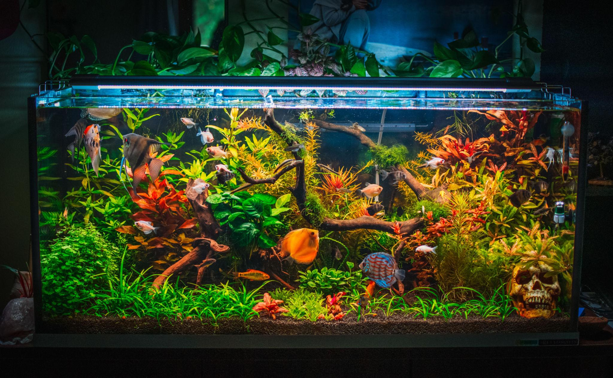
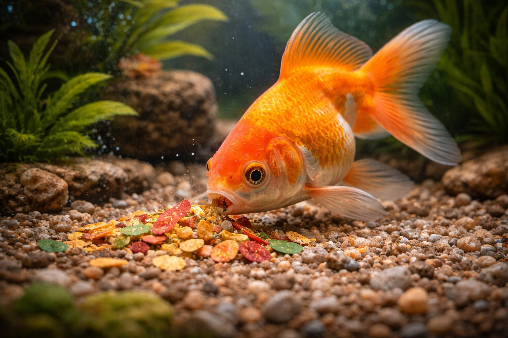
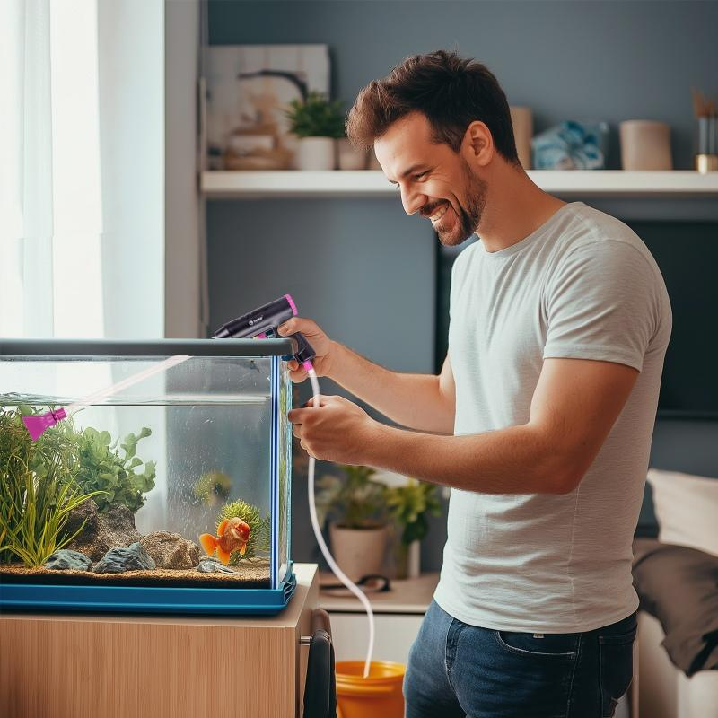
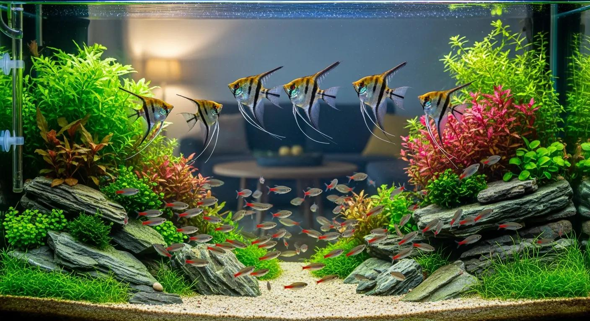
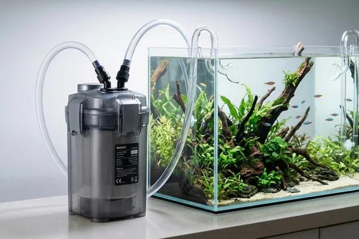
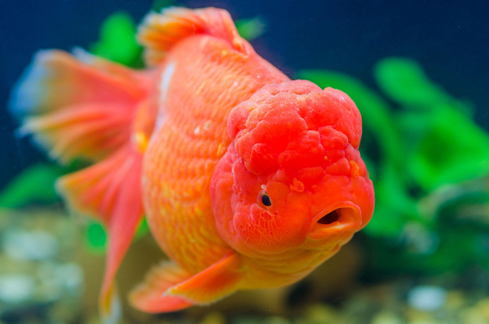
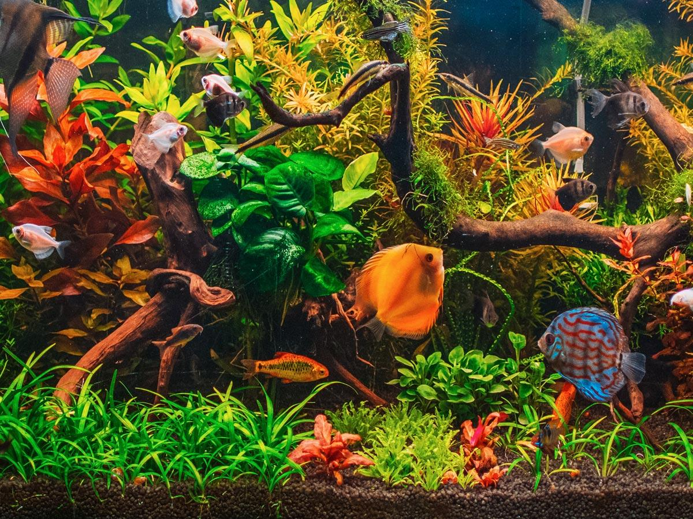

Nuestros Servicios
En Mundo de los Peces compartimos información y recomendaciones para ayudar a mantener acuarios saludables. Aquí encontrarás orientación sobre los cuidados básicos y las necesidades de diferentes especies.

Alimentación de peces
Explicamos la importancia de proporcionar una alimentación adecuada según la especie. Los Goldfish, Koi y peces tropicales pueden necesitar alimentos diferentes para mantener una buena salud.
- Tipos de alimentos para peces ornamentales.
- Frecuencia y cantidad de alimentación.
- Recomendaciones para evitar la sobrealimentación.

Mantenimiento de acuarios
Un acuario necesita mantenimiento periódico para conservar una buena calidad del agua. Compartimos consejos sobre cambios parciales de agua, limpieza y revisión de los equipos.
- Cambios parciales de agua.
- Control de amoníaco, nitritos y nitratos.
- Limpieza y mantenimiento de filtros.
- Revisión de temperatura y oxigenación.

Compatibilidad entre especies
No todos los peces pueden vivir juntos. Algunas especies requieren temperaturas, tamaños de acuario y condiciones diferentes. Por eso es importante investigar antes de incorporar nuevos peces.
- Comportamiento de las especies.
- Requerimientos de espacio.
- Compatibilidad de temperatura y parámetros del agua.
- Prevención de conflictos entre peces.

Filtración y oxigenación
Los sistemas de filtración ayudan a mantener el agua en buenas condiciones. Explicamos cómo funcionan los filtros mecánicos, biológicos y químicos, así como la importancia de una buena circulación del agua.
- Filtros internos y externos tipo canister.
- Material filtrante biológico y mecánico.
- Oxigenación y movimiento de la superficie.
- Conservación de las bacterias beneficiosas.

Prevención de enfermedades
Compartimos información sobre señales que pueden indicar problemas de salud en los peces, como cambios de comportamiento, falta de apetito o alteraciones en las aletas.
- Observación diaria de los peces.
- Importancia de la cuarentena.
- Identificación de señales de alerta.
- Prevención mediante buena calidad del agua.

¿Tienes alguna consulta?
Si deseas compartir alguna pregunta sobre acuarios, especies o alimentación, puedes visitar nuestra sección de contacto.
